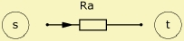

|
 |
| Purpose | Acoustic resistance |
| Type | Network element (2 pole) |
| Domain | Acoustic |
| Used in | System |
AcouResistance 'Any Name'
Node=s
Ra=
This two-pole element implements a lumped acoustic resistance in the network.
AcouResistance typically is used only in low frequency analysis or to check the sensibility of a system to resistive parts anywhere in the structure. More complex structures may be better analyzed with the help of the Duct or Impedance components or with the help of the Boundary Element Method.
In the frequency domain, the pressure-difference p across the acoustic resistance Ra is equal to p = Ra·V with volume velocity V.
The acoustic resistance corresponds to an electric resistance, if the flow corresponds to the volume velocity V and the potential to the pressure p.
The element AcouResistance may represent any acoustic component within which the volume-velocity vibrates in phase with the sound pressure. In other words, no energy is stored with the sound-flow. Acoustic resistance is present at for example:
See at Ra= for details and examples.